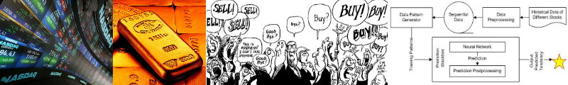
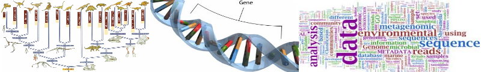

Status: Completed
People: ManChon U, Eric Talevich, Natarajan Kannan, Khaled Rasheed, Roberto Perdisci
Introduction:
When people make critical decisions, they often consider the opinions of multiple experts from different domains rather than committing themselves to a single expert or relying on their own judgment. The same principle applies in machine learning for the construction of robust predictive models. However, the outcome of each expert/model might include a certain degree of uncertainty, which affects the robustness of the combined predictive model.
In this research, we present two effective machine learning frameworks (ROMP and VAMO) to tackle challenging problems in the domains of cancer prediction and malware clustering. Our frameworks successfully improve the learning outcomes from multiple sources by using cluster validity analysis to reduce label uncertainty.
In ROMP, we introduce novel features for identifying cancer-causing mutations in the cancer kinome, and utilize various feature selection methods to evaluate our proposed features. We combine multiple classifiers for the prediction of rare oncogenic mutations, followed by using the Expectation Maximization (EM) clustering algorithm and our self-invented cluster validity metrics to improve the learning outcomes from the ensemble classifier as well as to identify suspicious mutations in the dataset. Our framework successfully discovered rare causative mutations that were later confirmed by lab experiments.
Another framework -- VAMO, provides a fully automated assessment of the quality of malware clustering results. VAMO does not require a manual mapping between malware family labels output by different AV scanners. Furthermore, VAMO does not discard malware samples for which a majority voting-based consensus cannot be reached. Instead, VAMO explicitly deals with the inconsistencies typical of multiple AV labels to build a more representative reference set. Our evaluation, which includes extensive experiments in a controlled setting and a real-world application, show that VAMO performs better than majority voting-based approaches, and provides a way for malware analysts to automatically assess the quality of their malware clustering results.
Status: Completed
People: ManChon U, Eric Talevich, Natarajan Kannan, Khaled Rasheed
Introduction:
Cancer is a genetic disease that develops through a series of somatic mutations, a subset of which drive cancer progression. Although cancer genome sequencing studies are beginning to reveal the mutational patterns of oncogenes in various cancers, identifying the small subset of "causative" mutations from the large subset of "non-causative" mutations, which accumulate as a consequence of the disease, is a challenge. In this article, we present an effective machine learning approach for identifying cancer-associated mutations in human protein kinases, a class of signaling proteins known to be frequently mutated in human cancers. We evaluate the performance of 11 well known supervised learners and show that a multiple-classifier approach, which combines the performances of individual learners, significantly improves the classification of known cancer-associated mutations. We introduce several novel features related specifically to structural and functional characteristics of protein kinases and find that the level of conservation of the mutated residue at specific evolutionary depths is an important predictor of oncogenic effect. We consolidate the novel features and the multiple-classifier approach to prioritize and experimentally test a set of rare unconfirmed mutations in the epidermal growth factor receptor tyrosine kinase (EGFR). Our studies identify T725M and L861R as rare cancer-associated mutations inasmuch as these mutations increase EGFR activity in absence of the activating EGF ligand.
Publication:
Status: Completed
People: ManChon U, Roberto Perdisci
Introduction:
When people make critical decisions, they often consider the opinions of multiple experts rather than committing themselves to a single expert or relying on their own judgment. The same approach should also apply to virus/malware classification/clustering. However, previous studies were mainly focus on simply applying majority voting approach to achieve this goal, while this approach it may result in an overoptimistic estimate of the malware clustering accuracy. In this project, we propose VAMO, a system that provides a fully automated quantitative analysis of the validity of malware clustering results. Unlike previous work, VAMO does not seek a majority voting-based consensus across different AV labels, and does not discard the malware samples for which such a consensus cannot be reached. In essence, VAMO aims to avoid reducing the reference set to only including "easy to cluster" samples. Rather, VAMO explicitly deals with the inconsistencies typical of multiple AV labels to build a more representative reference set. Furthermore, VAMO avoids the need of a (semi-)manual mapping between AV labels from different scanners that was required in previous work. Through an extensive evaluation in a controlled setting and a real-world application, we show that VAMO outperforms majority voting-based approaches, and provides a better way for malware analysts to automatically assess the quality of their malware clustering results.
Status: Completed
People: ManChon U, Chiahsun Ho, Shelby Funk, Khaled Rasheed
Introduction:
Hard real-time systems require that all jobs are assigned a deadline and the system is deemed to be correct only if all jobs complete execution at or before their deadlines. Such strict timing requirements add to the complexity of the scheduling problem. This complexity is exacerbated when the system is executed on a multiprocessor platform. Even so, scheduling overheads must be kept to a minimum in order for the runtime behavior to be predictable. Thus, real-time scheduling algorithms have the dual requirement of satisfying complex requirements while using fairly simple and straightforward logic. One way an algorithm may achieve this goal is to reduce the overhead due to preemption and migration by rearranging the schedule so as to increase the duration between preemptions. Unfortunately, determining how best to rearrange the jobs is and NP-Complete problem. Hence, we need to use heuristics when scheduling such systems. This leads us to ask a couple of questions. First, what is the best heuristic? Second, is the same heuristic best for all real-time systems?
We use a Genetic Algorithm to help us answer these questions. Our genetic algorithm based real time system scheduler (GART) is based on the DP-Wrap scheduling algorithm. The genetic algorithm searches through a variety of candidate heuristics to determine the best heuristic for a given task set. Experimental results demonstrate that this approach is able to efficiently identify the best heuristic for all the systems we consider. Moreover, we find that the "best" heuristic does, in fact, depend of various system parameters.

Status: Completed
People: ManChon U, Khaled Rasheed
Introduction:
Researchers have known for some time that non-linearity exists in the financial markets and that neural networks can be used to forecast market returns. In this project, we implemented a novel stock market prediction system which focuses on forecasting the relative tendency growth between different stocks and indices rather than purely predicting their values. This research utilizes artificial neural network models for estimation. The results are examined for their ability to provide an effective forecast of future values. Certain techniques, such as sliding windows and chaos theory, are employed for data preparation and pre-processing. Our system successfully predicted the relative tendency growth of different stocks with up to 99.01% accuracy.
Our system can predict the future relative tendency growth among different stocks – or stocks and indices - on a daily bases. Therefore, daily or short term investors and mutual fund managers – especially hedge fund managers - are the most likely group to benefit from our system as they can decide to perform the drop/add of a specific stock on a specific day.
-
ManChon U, Khaled Rasheed; "A Relative Tendency Based Stock Market Prediction System", Proceeding of The Ninth International Conference on Machine Learning and Applications (ICMLA 2010), IEEE, pp. 949-953, Washington DC, USA, 2010.
-
ManChon U, Zhen Li; "Public Goods Game Simulator with Reinforcement Learning Agents", Proceeding of The Ninth International Conference on Machine Learning and Applications (ICMLA 2010), IEEE, pp.43-49, Washington DC, USA, 2010.


Status: Completed
People: ManChon U, Vasim Mahamuda, Khaled Rasheed
Introduction:
Machine learning algorithms are extensively being used in the field of bioinformatics. With the invent of new genome sequencing techniques there has been a considerable increase in the amount of data available in the biological databases. In research projects, such as determining the structure and function of biological molecules, the role of machine learning is evident. Metagenomics deals with the study of micro-organisms such as prokaryotes that are found in samples from natural environments. The samples obtained from the environment may contain DNA from many different species of micro-organisms including bacteria and archea.
In this project, we compared the performance of six well known supervised learners - decision trees, naïve bayes, support vector machines, artificial neural networks, bayesian networks and decision tables . We also analyzed the performance of three different meta-learners namely bagging, boosting and stacking. Afterwards, we apply decision trees, bayesian networks and decision tables to see how the performance degrades when the number of species present in the metagenomic sample increases. We also try to see how the performance of the metagenomic sample changes as the percentage of unknown sequences in the metagenomic sample is varied.
-
ManChon U, Vasim Mahamuda, Khaled Rasheed; "On the Scalability of Supervised Learners in Metagenomics", Proceeding of The Ninth International Conference on Machine Learning and Applications (ICMLA 2010), IEEE, pp. 803-807, Washington DC, USA, 2010.
-
Vasim Mahamuda, ManChon U, Khaled Rasheed; "Application of Machine Learning Algorithms for Binning Metagenomic Data", Proceeding of The 2010 International Conference on Bioinformatics & Computational Biology (BIOCOMP'10/ISBN:1-60132-132-5/CSREA), pp.:68-74, Las Vegas, USA, 2010.
|
| |
|